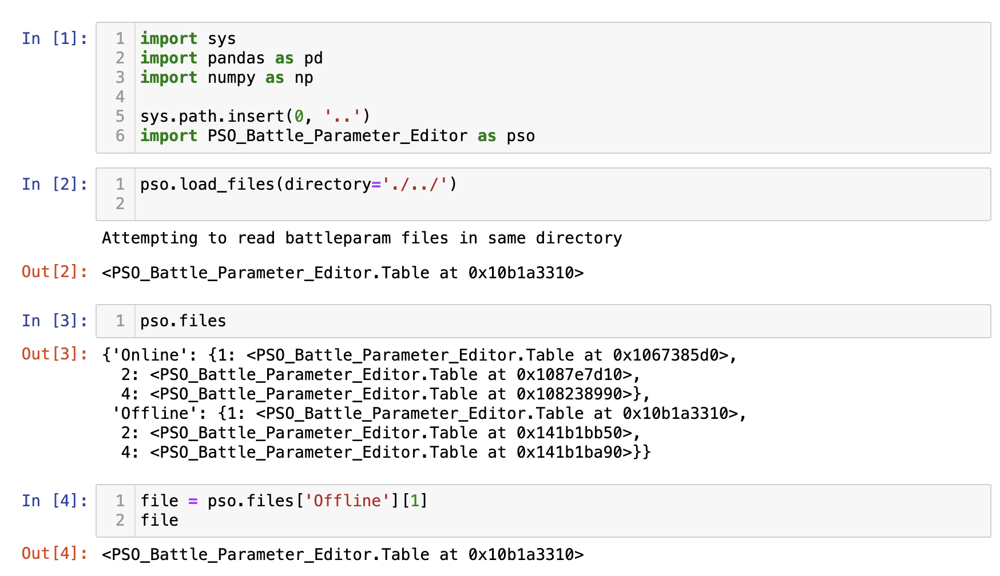
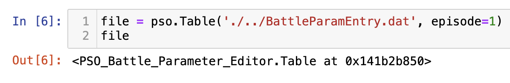
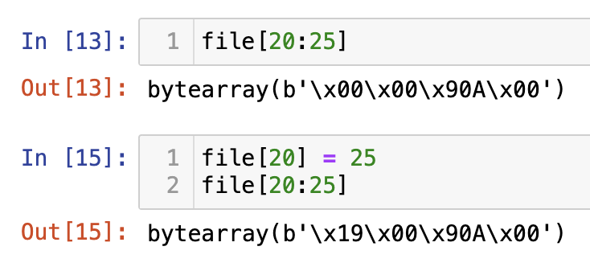
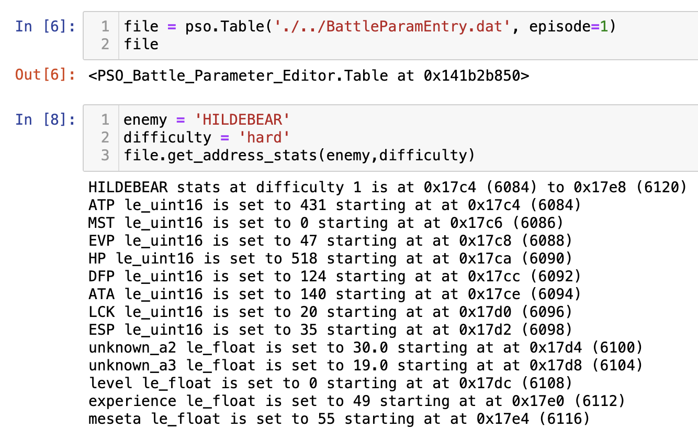
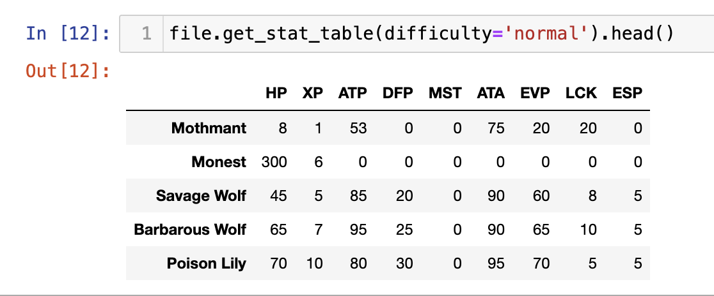
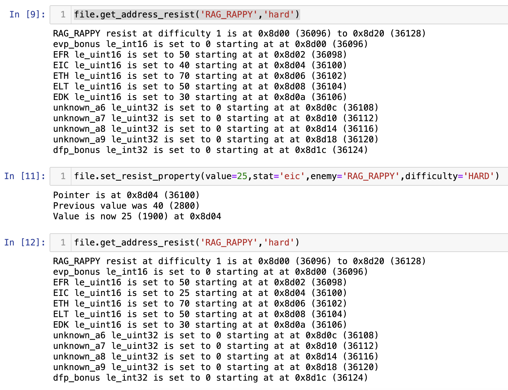
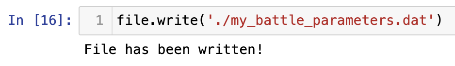

Battle Parameter Editor
Above is a link to the Github repository.
Background
In Phantasy Star Online, enemy stats are stored in binary files with the extention .bat. The game loads these parameters to determine enemy stats.
By better understanding these files, we can
- Better understand the game
- Create mods
Repository Files
Editor Code
The PSO_Battle_Parameter_Editor.py file contains tools that help read and manipulate the Battle Parameter files. Instructions for how to use the code will be further down.
Memory Map Code
There is a markdown file which maps out some of the enemy abilities and the locations in data that affect them. This can be used to denote possible values to change.
Using the Python Library
Installing
- The simplest way is to download the .py file and place it in the same directory as the file you wish to use, such as a Jupyter notebook or another .py file
- You can import the file by using import PSO_Battle_Parameter_Editor as pso to import it with alias pso

Loading Data
Data is loaded and manipulated using the Table class. This can be done by by calling the Table constructor which takes two arguments:
- Battle parameter file location (string)
- Episode number (1,2,4) An example is:
file = pso.Table('BattleParamEntry.dat',episode=1)

Viewing the Data
There are 4 main sections to the file:
- Stats
- Attack
- Resist
- Movement
Each of these 4 sections is further divided into 4 subsections (1 for each difficulty)
- Normal
- Hard
- Very Hard
- Ultimate
The byte-level data is stored in the table instance's data attribute. However, there are a number of functions that provide a more convenient way of viewing the data.
Slicing
Bytes at a given position can be seen using slicing, such as
file[20:25]
Keep in mind that the indices are 0-based and the end index is not included.
While it is possible to directly modify the bytes by using the index and assignment operator, this is discouraged.

Get Address
For each of the table sections, there is an associated "Get Address" function
- get_address_stats(enemy, difficulty)
- get_address_attack(enemy, difficulty)
- get_address_resist(enemy, difficulty)
- get_address_movement(enemy, difficulty)
You can call this method from the table instance and it will print information for that enemy and table. This is an easy way to get information, such as
- Data Addresses
- Current Values
- Data Types

The enemy parameter can be a string that corresponds to the enemy name (all caps and underscores instead of spaces). It can also be an integer if you know the 0-based indexed row number.
The difficulty parameter can be a string corresponding to the English name of the difficulty or an integer out of 0, 1, 2, 3.
Get Table
For a more readable summary of values can be retrieved using get_table methods. This returns a Pandas dataframe.
NOTE: Currently, modifications made to pandas dataframes do not cause changes to the underlying data, so do not attempt to modify using this.

Modifying the Data
There are several methods that can be called to edit the data.
Set Property
The safest way to make changes is using set property methods. Currently the stats and resist tables support this method.
The method requires only
- Numerical value you want to set the property to
- The name of the property to change
- The enemy name
- The difficulty to make the change in

Set with Datatype
A more flexible method is using set_with_data_type. This sets a value by providing a value, the datatype to format it as, and the start location for it to write to. The datatype and location should be figured by using get_address calls. An advantage to this over directly setting using assignment is that it formats the bytes appropriately for you.

Saving Changes
Changes made to the python object do not automatically write to the file in case of user error. A new file can be outputted with the changes made using the write method, which takes the new file name as a parameter.

References
Some damage values taken from Ephinea
Understanding of file structure taken from Fuzziqersoftware/NewServ.
Help from AKDylie.
Inspired in part by Solybum